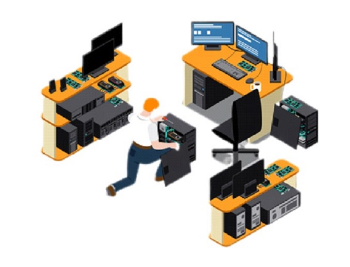

При работе с периферийным оборудование проводятся следующие
работы
⦁ Диагностика и анализ состояния: Наша компания проводит
тщательную диагностику и анализ
состояния периферийного оборудования с помощью специализированных
инструментов и программного обеспечения.
⦁ Обслуживание и техническое обслуживание: Мы предоставляем
услуги по обслуживанию
и техническому обслуживанию периферийных устройств.
⦁ Ремонт и восстановление функциональности: В случае
возникновения неисправностей или поломок,
наши специалисты готовы провести ремонт и восстановление
функциональности периферийного оборудования.
⦁ Настройка и оптимизация работы: Наши специалисты помогут вам
настроить оборудование, чтобы оно работало наиболее эффективно и
производительно.
⦁ Замена деталей и компонентов: При необходимости мы можем
заменить детали и компоненты периферийного оборудования для улучшения
его характеристик.
